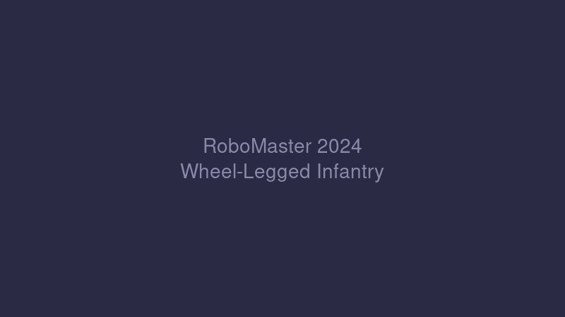
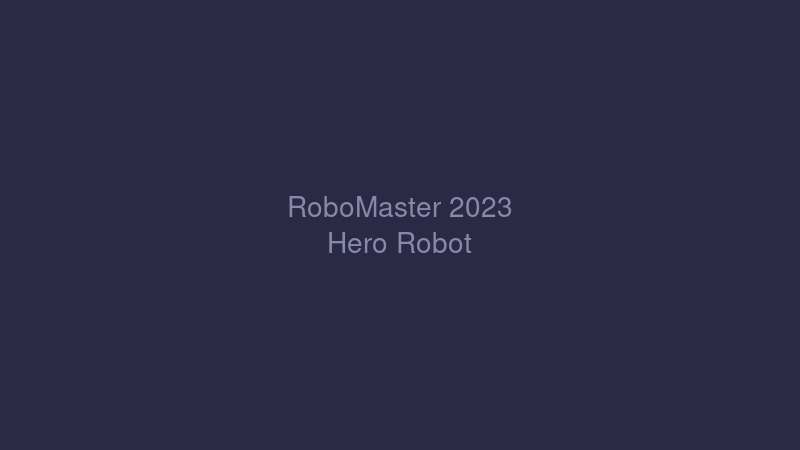
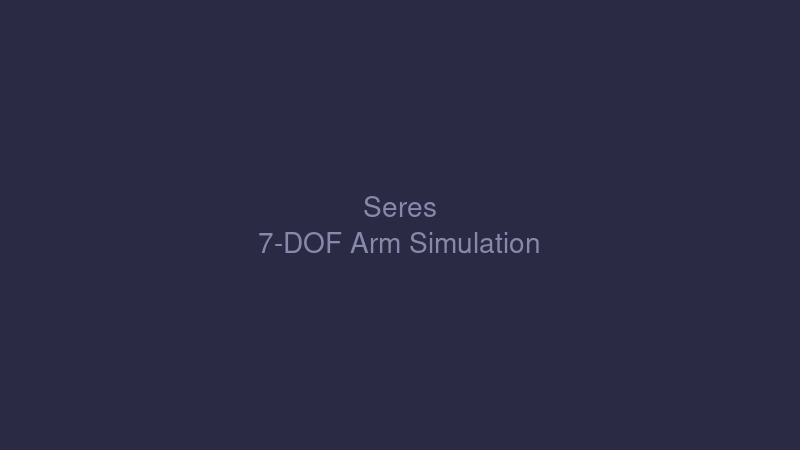

Education
The Chinese University of Hong Kong (Shenzhen)
2025 – 2027
MSc in Artificial Intelligence & Robotics · GPA 3.40/4.00
Chongqing University
2021 – 2025
BEng in Robotics Engineering (Honors Class) · GPA 3.64/4.00
CET-4/6 · IELTS 6.5
RoboMaster — CQU 战队
2024 赛季 · 全国二等奖
电控组组员 — 轮腿平衡步兵 & 双头哨兵
- 研发五连杆并联构型轮腿平衡步兵，采用 Model-Based 方法在 MATLAB/Simulink 完成完整仿真验证
- 主控制器使用 LQR 并联多个 PD 控制器，嵌入式部署于 MCU + FreeRTOS 平台
- 使用 Kalman Filter 处理实际传感器数据，实现倒地自起、跳跃等特殊功能
- 负责双云台双头哨兵嵌入式控制开发，对接视觉与导航算法，实现全自动机器人

2023 赛季 · 全国三等奖
电控组组长 — 英雄、工程、哨兵
- 负责三台机器人（英雄、工程、哨兵）嵌入式控制代码，主控 STM32F407 + FreeRTOS
- 基于 CAN 总线与 PID 算法控制底盘和云台电机，融合 IMU、遥控器与上位机数据实现多种控制模式
- 完成整台机器人的全部运动控制与整机测试

Internship Experience
vivo 移动通信 · C/C++ 嵌入式实习
2026.05 – 2026.10
- 开发 TWS 耳机自动化工具链，基于 UART/串口实现自动烧录、模拟开关盖信号、蓝牙连接等底层接口
- 设计上层功能测试模块并接入主控代码，撰写 Agent Skill 实现闭环自动化：修改代码 → 烧录 → 测试 → 抓 Log → 迭代
赛力斯凤凰智创 · 前瞻研发部
2025.02 – 2025.06
- 开发 S-R-S 构型七自由度人形机械臂 MATLAB 运动学仿真模型
- 实现正逆运动学算法（DH 参数法），获取关节力矩数据为结构设计提供参数支持

大疆 RoboMaster 部门 · 裁判负责人
2024.03 – 2024.04
- 统筹执行 2024 赛季 RoboMaster 高校联盟赛西南赛区全流程赛事
- 领导 10 人裁判团队并培训 50+ 志愿者，担任主裁判与申诉处理
明月湖智能科技 · 嵌入式实习
2023.07 – 2023.08
- 参与盲文点显器项目，完成 4 层 PCB 设计、焊接测试、ESP32 主控软件开发
- 调试语音模块等外设，协助产品打样及功能测试
Other Projects
xv6 操作系统
2026.05 – 2026.07
- 基于 RISC-V 架构 xv6 内核，实现用户态 sleep 等 Shell 指令及 sandbox 自定义系统调用
- 实现 Copy-on-Write 机制优化 fork() 性能，深入理解页表与虚拟地址映射
- 分析自旋锁与睡眠锁底层实现，理解并发控制与竞态处理
Skills
- C/C++ / Embedded Development (STM32F4, Keil, HAL)
- FreeRTOS (task scheduling, source code analysis)
- Peripherals & Protocols: GPIO, Timer, PWM, UART, SPI, I2C, CAN, RS485
- Control: PID, LQR, Kalman Filter, MATLAB/Simulink
- Linux Embedded: char device drivers, platform, device tree, Kobject
- Bluetooth: BLE & Classic Bluetooth
Honors & Awards
- RoboMaster 2024 全国赛 二等奖
- RoboMaster 2024 南部赛区 一等奖
- RoboMaster 2023 全国赛 三等奖
- RoboMaster 2023 南部赛区 二等奖
- 国家级大创项目 良好
- 重庆大学 优秀学生 / 丙等奖学金